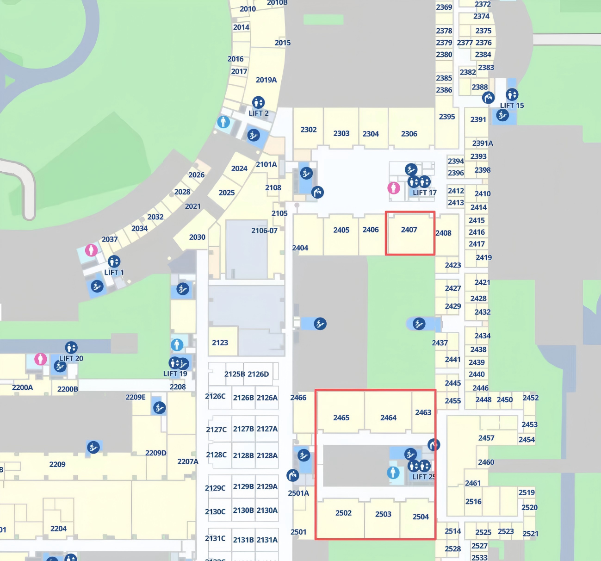

Overview
Computing and Network Convergence (CNC) has become a populart topic in the information and communication technology industry in recent years. It aims to achieve convenient and efficient access to computing power by jointly optimizing and scheduling computing and network resources. The implementation of joint optimization and scheduling requires a brand new architecture design, which can provide ubiquitous and guaranteed service level agreements (SLA) in terms of connectivity and computing resource supply. With the development of AI technology, the demand for collaborative utilization of various resources, such as computing and storage, is becoming increasingly urgent. CNC can efficiently coordinate various resources, providing guarantees for AI training and inference businesses in terms of network transmission, computing power scheduling and load balancing, maximizing resource utilization while minimizing energy consumption.
This workshop will cover theories, technologies and applications related to CNC, including but not limited to architectures, protocols, platforms, techniques and services. The main research includes CNC scheduling and orchestration, computing and network resource identification, addressing, perception, measurement, and in-network computing. It covers both fixed and cellular wireless networks.
Workshop Program
| CNC'25 Workshop Program (Dec 1st, Room 2503) | |
|---|---|
| 14:00-14:10 PM | Welcoming Remarks |
| 14:10-14:30 PM | Pre 1: 6G Mobile Computing Aware Networks: A Deep Fusion of Communication and Computing |
| 14:30-14:50 PM | Pre 2: MPINT: Lightweight Multipath In-band Network Telemetry via In-Network Deduplication |
| 14:50-15:10 PM | Pre 3: Computing-Aware Routing Approach for Computing and Network Convergence |
| 15:10-15:30 PM | Pre 4: A DRL-Based Resource Scheduling for Edge Computing and Network Convergence |
| 15:30-15:50 PM | Coffee Break |
| 15:50-16:10 PM | Pre 5: ERCC: Fine-grained RDMA Congestion Control via Kalman Filter-based Multi-bit ECN Feedback Reconstruction |
| 16:10-16:30 PM | Pre 6: Sentry: QoE-Aware Failure Handling in Large-Scale Overlay Networks via Spatiotemporal GNNs |
| 16:30-16:50 PM | Pre 7: Enabling Resource-Aware Distributed Sketch Deployment with Reinforcement Learning |
| 16:50-17:00 PM | Closing Remarks |
Table of Contents
CNC '25: Proceedings of the ACM CoNEXT-2025 Workshop on Computing and Network Convergence
6G Mobile Computing Aware Networks: A Deep Fusion of Communication and Computing
6G networks require seamless integration of communication and computing to ensure end-to-end Quality of Service (QoS) for emerging AI-driven applications. However, existing architectures like 5G multi-access edge computing (MEC) suffer from decoupled resource management, leading to poor QoS under dynamic environments. To address this, we propose a 6G Mobile Computing-Aware Network (MCAN) with a built-in computing plane that enables real-time coordination between communication and computing resources. Key innovations include dual-functional computing executors (CEs) and cross-layer fusion protocols (e.g., fusion RRC and NG-AP+). Evaluations demonstrate that MCAN reduces average task delay by 62% (from 88ms to 33ms) and task jitter by 99% (from 573ms to 2.6ms) compared to 5G MEC.
A DRL-Based Resource Scheduling for Edge Computing and Network Convergence
With the advancement of edge computing, computation-intensive tasks are increasingly deployed at the network edge. However, existing task assignment frameworks rely solely on network information, posing computing node overload or idleness risks, compromising resource utilization and service quality. To address this issue, a novel edge computing and network convergence (ECNC) resource scheduling mechanism is proposed. Furthermore, a multi-head deep Q network (MH-DQN) algorithm is designed to achieve joint optimization of computing node selection, routing path decision-making, and bandwidth-computing resource allocation in multi-user scenarios. The algorithm employs multi-dimensional state modeling and a multi-head action output, minimizing disparities in network and computing load while satisfying latency constraints, thereby balancing dynamic load within computing and network convergence environments. Experimental results demonstrate that the proposed algorithm outperforms baseline methods in key metrics such as average reward and task completion rate, validating its effectiveness for intelligent resource scheduling.
Computing-Aware Routing Approach for Computing and Network Convergence
Compute-network convergence (CNC) demands joint optimization of heterogeneous resources, yet existing anycast routing ignores dynamic compute loads. We propose a CNC routing framework featuring: (i) dual-table forwarding that maintains flow affinity while distributing load across compute instances, (ii) lightweight telemetry collecting both network and compute metrics without protocol modifications, and (iii) a two-stage routing algorithm combining load-aware path enumeration with projected gradient descent. Evaluations on 200-1800 node topologies show 25% latency reduction, 27% utilization improvement, and 4.3× faster convergence versus baselines. Our approach seamlessly integrates with existing IP infrastructure, enabling incremental deployment for latency-sensitive services.
Enabling Resource-Aware Distributed Sketch Deployment with Reinforcement Learning
The conflict between static network resource allocation frameworks and exponentially increasing computational workloads has made Computing and Network Convergence (CNC) a hot topic. By integrating computing resources and networks, CNC could orchestrate computing resources globally, thus effectively improving the performance and efficiency. To achieve efficient network-aware and traffic telemetry in CNC scenario, sketch is introduced to detect and measure network flow in real-time. However, existing solutions typically adopt centralized deployment strategy, which inevitably imposes significant resource occupation in specific switches. To address the coarse-grained sketch segmenting problem in distributed sketch deployment, we propose DiSketch, an intelligent deployment agent trained with reinforcement learning algorithm. Experiments show that, DiSketch can effectively decrease the maximum resource utilization by 9.3%, standard deviation of resource utiliazation by 4.16% and achieve an effective packet measurement load balancing.
ERCC: Fine-grained RDMA Congestion Control via Kalman Filter-based Multi-bit ECN Feedback Reconstruction
With the large-scale deployment of RDMA technology in data center networks, the DCQCN algorithm has gradually become the mainstream for RDMA congestion control. However, due to issues such as coarse granularity in congestion detection, reliance on preset heuristic rules for rate adjustment, and complex parameter tuning, DCQCN exhibits significant performance bottlenecks in large-scale RDMA networks where high-performance distributed applications are widely deployed. To address this, this paper proposes ERCC. Based on easily accessible ECN signals, ERCC reconstructs the single-bit ECN marking information sequence into multi-bit precisely quantized congestion information through Kalman filtering. Furthermore, combined with a PID controller, it achieves low network overhead and high-precision congestion control. We have implemented ERCC on Yunsilicon’s FPGA RNIC without any modifications to the switches. Hardware testbed experiments indicate that, compared to DCQCN, ERCC can improve bandwidth utilization by 8.51% and effectively ensure fairness both within and between senders. Large-scale NS3 simulation shows that, compared to DCQCN, ERCC can reduce FCT by up to 48%, with particularly significant effects when handling long flows. Meanwhile, it can quickly converge to the available bandwidth while maintaining low buffer queue occupancy, achieving performance comparable to HPCC.
MPINT: Lightweight Multipath In-band Network Telemetry via In-Network Deduplication
Multicast traffic monitoring is crucial for bandwidth-intensive applications like live streaming and IPTV, where efficient one-to-many delivery directly impacts service quality and operational costs. In-band Network Telemetry (INT) delivers real-time, fine-grained monitoring but fails in multicast environments due to telemetry data redundancy and duplicated data uploads. To address these limitations, we propose MPINT (Multi-Path In-band Network Telemetry), a multicast-optimized framework leveraging in-network computing for telemetry data deduplication. MPINT fundamentally eliminates in-flight telemetry data replication during packet forwarding, conserving network bandwidth while suppressing duplicate data upload. Evaluation results demonstrate >80% INT overhead reduction and 50% less uploaded bytes versus conventional multicast INT in the same test topologies, achieved through MPINT’s in-network processing. Complementing the MPINT framework, we implement an analytical infrastructure integrating Redis-optimized telemetry data storage, multicast tree reconstruction via compressed path signatures, and probabilistic packet loss diagnosis—collectively enabling comprehensive multicast state analytics.
Sentry: QoE-Aware Failure Handling in Large-Scale Overlay Networks via Spatiotemporal GNNs
With the widespread deployment of large-scale overlay networks, transmission failures among edge servers occur frequently, severely impacting service availability and Quality of Experience (QoE). Existing failure handling solutions struggle to effectively address such scenarios. Accordingly, we propose Sentry, a QoE-aware failure handling method based on spatiotemporal graph neural networks. Instead of relying on precise localization of specific faults or root causes, Sentry directly identifies and offlines a set of edge servers related to failures to ensure service level objective (SLO) while minimizing QoE degradation. Sentry constructs a state graph based on real relay streams, combining temporal modeling and graph neural networks to effectively filter out short-term network fluctuations and transform the complex combinatorial optimization problem into an efficient node-level prediction task. The experimental results show that Sentry outperforms existing solutions in both success rate and cost of failure handling, demonstrating strong overall performance and deployment potential.
Location

Call for Papers
The deep convergence of computing and network resources has become a key engine driving the development of future technologies, such as artificial intelligence, big data, and cloud computing. To explore the cutting-edge technologies, innovative applications, and future trends in the field of computing and network convergence (CNC), we sincerely invite you to attend CNC workshop. We are also soliciting high-quality papers and practical cases globally.
Topics of Interest
- 5G-A/6G network integrated with computing service
- AI Training and Inference Network
- Computing aware network routing
- Computing/cloud and network convergence architecture
- Coordination scheduling of cloud, network, edge, and terminal
- Computing and network resource identification and addressing
- Digital twin network for CNC
- Energy optimization and green low-carbon technologies of CNC
- Integrated sensing, communication and computing
- In-network computing
- Measurement of computing resources and green computing
- Performance evaluation and testing technology for CNC
- Security and privacy protection for computing/cloud and network convergence
- Service, computing and network resource awareness
- Transaction and incentive mechanism of computing resources
Submission Instructions
Submissions must be original, unpublished work, and not under consideration at another conference or journal. Submitted papers must be at most six (6) pages long, excluding references and appendices, in two-column 10pt ACM format. All submissions will undergo a strict double-blind peer review process. Authors of accepted submissions are expected to present and discuss their work at the workshop.
Please Submit your paper via https://conext25cnc.hotcrp.com/
Important Dates
| Event | Date |
|---|---|
| Paper submissions deadline | August 8th, 2025 (AoE) |
| Paper acceptance notification | September 24th, 2025 |
| Camera ready due | October 8th, 2025 |
| Program available online | Before mid-October, 2025 |
| List of organization details | Before mid-October, 2025 |
WorkShop Chairs
- Tao Sun, China Mobile
- Tian Pan, Beijing University of Posts and Telecommunications
- Tsang Yolanda, ASTRI
Technical Program Committee
- Moustafa, Hassnaa, Intel
- Deyun Gao, Beijing Jiaotong University
- Ran Pang, China Unicom
- Alex Hsu, MTK
- Peirui Cao, Nanjing University
- Lei Han, Nanjing University of Posts and Telecommunications
- Ruifeng Li, China Mobile
- Junchen Jiang, University of Chicago
- Weifei Wu, Peking University
- Haoyu Song, Futurewei Technologies
- Yang Xu, Fudan University
- Tong Yang, Peking University
- Changgang Zheng, University of Oxford
- Lin He, Tsinghua University
- Yang Song, Alibaba Cloud
- Keqiang He, Shanghai Jiaotong University
- Hao Li, Xi'an Jiaotong University
- Fuliang Li, Northwestern University
- Yongji Dong, National Digital Switching System Engineering and Technological Research Center of China